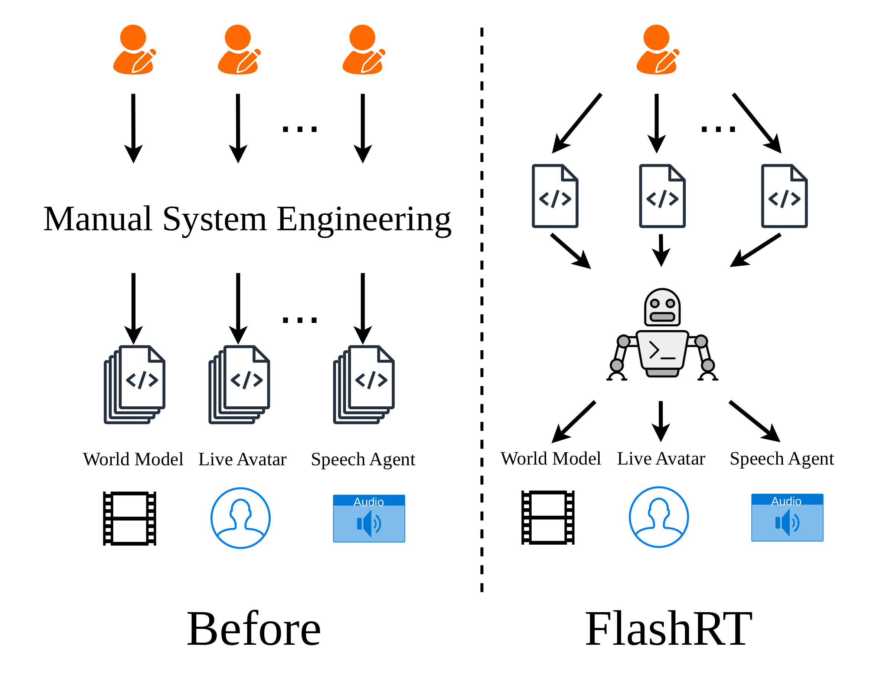
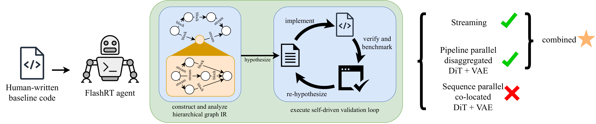

Real-time multimodal applications each deserve their own serving systems.
Multimodal applications are often quite complicated. Each sits at its own set of tradeoffs on key metrics like latency and throughput, and balancing these metrics can require different hardware budgets for each application. Each application also consists models compute that differently: autoregressive LLMs, diffusion transformers, etc. Ultimately, no shared serving stack can fit them all. Instead, we introduce FlashRT, a general agent that customizes a system for each application. FlashRT starts from a plain user-provided reference and works to develop a customized system to serve it. The specialization pays off: Across five real-time applications on a single node of 8 × NVIDIA B200 GPUs, FlashRT reaches up to
70× lower latency and 2.8× higher throughput, all with no hand-written serving code.
📊One agent, Many Real-time Applications
For each application the agent is given two things: the reference implementation and a GPU
budget. No hints, no templates. It works out streaming, disaggregation, sequence parallelism,
and pipeline parallelism on its own, and checks every variant against the reference before
keeping it. All numbers below come from one node of 8 NVIDIA B200 GPUs, using Claude Code with
Opus 4.8.
The pipeline runs ASR → LLM → streaming TTS → an audio-driven video avatar (Live-Avatar).
The agent overlaps the stages with chunk-level streaming, splits the TTS and video engines
onto separate GPUs, and pipelines the four denoising steps inside the video model. A
~108-second offline baseline becomes a ~1.6-second interactive stream that runs well above
real-time frame rates.
About 70× lower latency than the hand-written single-GPU reference (108 s → 1.6 s). The
8-GPU frame rate is the pipeline's theoretical sustainable throughput, far beyond what
real-time display needs, so latency is the binding constraint here.
Qwen3-Omni Multimodal LLM
Qwen3-Omni is a natively multimodal model with three stages to support text input → audio output:
a Thinker LLM, a Talker LLM, and a vocoder. We compare with vLLM-Omni, which disaggregates and streams
these stages with hand-written code. Given only a synchronous baseline, the agent recovers the same
structure on its own, then edges past it with lighter-weight data transfer between components than
vLLM-Omni's more general implementation.
Deployment
GPUs
Latency ↓
RTF < 1
Sequential (no streaming)
1
42.713 s
✓
vLLM-Omni (hand-engineered)
3
0.433 s
✓
FlashRT
3
0.323 s
✓
25% lower latency than vLLM-Omni's hand-engineered deployment, while keeping the real-time
factor below 1.
Video Background Editor Krea-Realtime-14B + SAM 3
A live webcam stream runs down two paths at once. Krea-Realtime restyles each frame while
SAM 3 segments the person, and the two results are composited so only the background changes.
The agent puts SAM 3 on its own GPU, off the restyling path, and parallelizes the DiT and VAE
that do the restyling.
Deployment
GPUs
Latency ↓
Frame rate ↑
Baseline (sequential)
1
1715 ms
6.82 FPS
FlashRT — parallel
2
1014 ms
11.54 FPS
FlashRT — latency-optimized
4
491 ms
17.18 FPS
FlashRT — frame-rate-optimized
5
517 ms
19.41 FPS
About 3.5× lower latency (1.7 s → 0.5 s) and 2.8× the baseline frame rate (6.8 → 19.4 FPS),
with SAM 3 kept on its own GPU throughout.
Video World Model WorldPlay-5B
A video world model turns keyboard actions (WASD, arrow keys) into a video stream you can
move through in real time. We use WorldPlay, which splits into an autoregressive DiT and a
streaming VAE that share no state, so the agent can disaggregate them onto separate GPUs and
pipeline across frames for a higher frame rate, or co-locate them under sequence parallelism
for lower latency. It scales whichever choice it makes to the GPU budget.
GPUs
Deployment
Latency ↓
Frame rate ↑
1
Baseline (sequential)
869 ms
20.4 FPS
2
FlashRT — frame-rate-optimized
625 ms
31.0 FPS
2
FlashRT — latency-optimized
493 ms
25.5 FPS
1.5× the baseline frame rate or 43% lower latency, depending on which target the agent
optimizes. See paper for extended results with scaling to more GPUs.
Video Narrator LongLive-2.0-5B
The user speaks, an ASR model transcribes each prompt, and an autoregressive video model
(LongLive-2.0-5B) keeps rendering a stream that updates to match. The agent runs the ASR on
its own GPU so transcription never stalls generation, then trades latency against frame rate:
co-locate the DiT and VAE at a higher sequence-parallel degree for lower latency, or split them
apart and tile the VAE for a higher frame rate.
GPUs
Deployment
Latency ↓
Frame rate ↑
1
Baseline (sequential)
674 ms
25.8 FPS
2
FlashRT — latency-optimized
512 ms
36.5 FPS
2
FlashRT — frame-rate-optimized
630 ms
47.8 FPS
1.9× the baseline frame rate, or 1.3× lower latency when the agent optimizes for latency
instead. See paper for extended results with scaling to more GPUs.
🧭The Vision
Development efficiency and intelligence change how ML infrastructure is designed.
For decades we have built ML software as a layered stack: hand-written kernels beneath
frameworks, frameworks beneath compilers and serving systems, each layer written once and
shared by every application above it. Sharing was never the goal — it was the workaround
for two constraints of human-written software. AI agents remove both.
01 · Every application gets its own system.
Then
Code was expensive to write. Every line an engineer produced had to be amortized across
many applications, so everyone settled for the average case of a shared stack.
Now
For an agent, lines of code are cheap. It writes, rewrites, and discards code at
negligible cost — so a system specialized to your application, your
hardware, and your efficiency targets stops being a
luxury.
02 · Reuse ideas, not frozen code.
Then
Traditional stacks compose only through exact, strictly compatible interfaces. Code that
is even slightly incompatible cannot be reused at all — so reuse meant frozen,
portable artifacts.
Now
An agent reads code the way an engineer does. It takes the ideas from a
system that almost fits — kernels, schedules, parallelism strategies — and
re-implements them for the case at hand.
One reference, many systems, written online
This is not at all hypothetical — every deployment in the results above is, in fact, such a system. From
one reference implementation, the agent can write a latency-oriented system when you are chasing
responsiveness, a throughput-oriented one when you are chasing raw throughput, or a balanced
one in between, then re-specializes it for however many GPUs you actually have.
And there is a cost we rarely question. A shared stack must serve everyone, so it piles up
— compatibility paths, configuration surfaces, layers upon layers — until
maintaining and extending it becomes a project of its own, and understanding and debugging it
becomes a tremendous challenge for humans and agents alike. In the era of agents, it is worth
asking whether that structure is still a helper or a blocker —
especially for ML infrastructure, whose entire job is to connect models, systems, and hardware.
The foundation of ML software shifts from shared infrastructure to a general
agent — and FlashRT is our first concrete step.
🎯Why We Build This
FlashRT sits between two problems we care about: making generative models fast enough to use
interactively, and handing the repetitive systems work behind them to an agent instead of an
engineer.
Interactive generative models
Most generative models are still used in batches: send a prompt, wait, get a file back.
We are after the interactive case, where audio and video models run fast enough to hold a
conversation or react to a live webcam.
Streaming generation at sub-second latency
Audio and video models that respond in real time
Heterogeneous pipelines, composed from off-the-shelf models
Agents that do the systems work
Making these pipelines run efficiently is slow, specialized work, and it has to be redone
for every new application. FlashRT is our first step toward letting an agent do it: write
the deployment, parallelize the models, and check the result against a reference.
Agent-written placement, streaming, and parallelism
Every variant checked against a ground-truth reference
Decisions gated on measurements, not guesses
⚙️The System
A developer writes a simple single-GPU reference. FlashRT lifts it into an optimized multi-GPU
deployment, choosing placement, streaming, and parallelism for itself, through a
chain-of-program workflow: lower the reference one pass at a time, and check the work
at every step.

Before vs. FlashRT. Where each new pipeline once demanded its own systems
team, a single agent now produces all of them from references.
Until now, every new real-time multimodal application (a world model, a live avatar, a speech
agent) came with its own round of systems engineering: deciding what to disaggregate, what to
stream, how to shard, and where to put each model.
FlashRT hands that work to one agent. A developer writes a plain single-GPU reference
for the application, and the agent makes and verifies every placement, streaming, and
parallelism decision inside a measurement-gated loop.
What comes out is a single serving system that targets very different applications, with no
per-application code on the systems side.

The chain-of-program workflow. From a human-written baseline, the agent
builds and analyzes a hierarchical graph IR, then runs a self-driven loop that implements,
verifies, and benchmarks each variant. Strategies that hold up (here, streaming and a
disaggregated DiT + VAE pipeline) get composed; ones that don't (co-located sequence
parallelism, for this throughput target) are dropped.
1
Lift
Turn the reference into a hierarchical graph IR that makes data dependencies, persistent state, and streaming edges explicit.
2
Validate
Run the IR through a sequential interpreter and diff it against the reference, so every later step stands on verified ground.
3
Analyze
Run static analyses over the IR to surface a finite list of legal moves: streaming, disaggregation, and intra-model parallelism.
4
Iterate
Work the candidates in a measurement-gated loop: implement, verify against the reference, benchmark, then re-plan from the numbers.
Insight 1 — Plan in passes, not one jump. An agent can't turn a
reference into an efficient deployment in a single jump. Make it build an IR, analyze that, and
only then lower it into a deployment, and the quality climbs. We call this
chain-of-program, after the way compilers lower code in passes.
Insight 2 — Ground the loop in real measurements. Prompted naively,
the agent writes broken code and stops exploring early. Instead it writes a test harness that
drives simulated input through the deployment's buffers, the way a real frontend would, then
proposes a change, verifies it against the reference, and re-plans
from the measured latency and frame rate.
📄Citation
@misc{flashrt2026,
title = {FlashRT: An Agentic System for Deploying Real-Time Multimodal Applications},
author = {Krish Agarwal and Zhuoming Chen and Zhenyu Gu and Atri Rudra and Beidi Chen},
year = {2026},
eprint = {XXXX.XXXXX},
archivePrefix = {arXiv},
primaryClass = {cs.LG},
url = {https://arxiv.org/abs/XXXX.XXXXX}
}